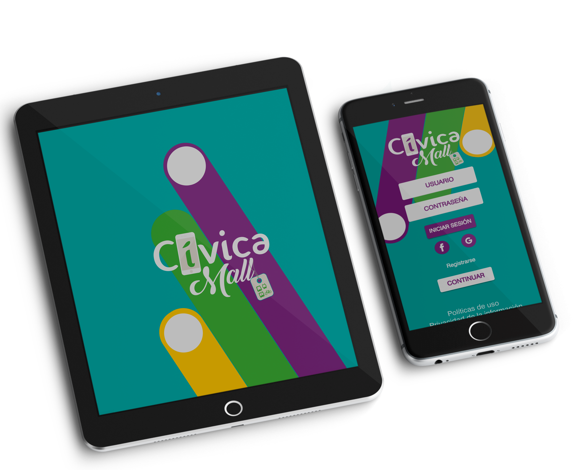

<div class="container-fluid objetivo">
  <div class="row">
    <div class="col-md-6 col-xs-12">
      
    </div>
    <div class="col-md-6 col-xs-12">
      <div class="card shadow-lg ">
        <h1>Objetivo</h1>

          <p>Motivar a los visitantes y habitantes de la ciudad de Medellín a que se conviertan en activos usuarios del nuevo aplicativo CivicaMall en donde encontrarán toda la información de la ciudad de Medellín y mostrando lo que tiene para ofrecer; así como de los eventos, cartelera de cine, promociones, etc.</p>
          <p>1. Realizar una activación innovadora con el uso de los beacons como estrategia de marketing de proximidad.</p>
          <p>2. Promover su marca a través de la tecnología becons con estrategias de marketing de proximidad durante la campaña.</p>

      </div>
    </div>
  </div>
</div>
